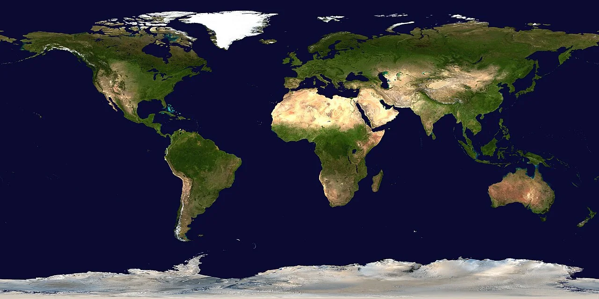

Earth · 2002
One planet. A closer look.
A simple editorial page built around a real public-domain satellite composite. The image is hosted locally as an optimized WebP, with its original source and credits intact.

The Blue Marble, 2002
1280 × 640 · locally optimized WebP
View original and licensing